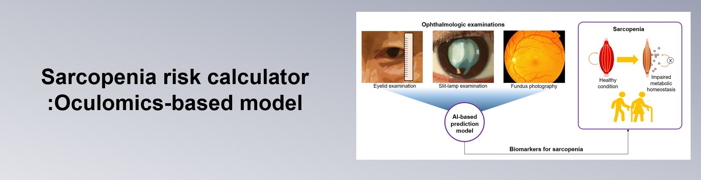

The page for
"Oculomics for sarcopenia: a machine learning approach towards predictive, preventive, and personalized medicine"
Authors:
Bo Ram Kim, Tae Keun Yoo, Hong Kyu Kim, Ik Hee Ryu, Jin Kuk Kim, In Sik Lee,J ung Soo Kim, Dong-Hyeok Shin, Young-Sang Kim, Bom Taeck Kim
Sex:
Male
Female
Age:
years old
Body Mass Indes (BMI):
kg/m^2
Region of residence:
Rural
Urban
Current smoker:
Yes
No
Alcohol consumption:
1 drink/week or more
less than 1 drink/week
Diabete mellitus (DM):
Yes
No
Hypertension (HTN):
Yes
No
Blepharoptosis:
Yes
No
Decreased levator function:
Yes
No
Pterygium:
Yes
No
Cataract:
Yes
No
Glaucoma:
Yes
No
Age-related macular degeneration:
Yes
No
Diabetic retinopathy:
Yes
No
Results
Skeletal muscle index prediction:
Sarcopenia index prediction:
Sarcopenia risk prediction (%):
powered by VISUWORKS Inc.